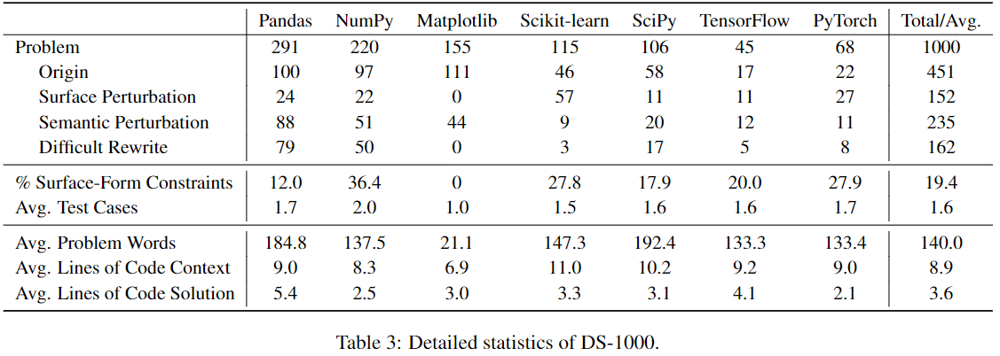
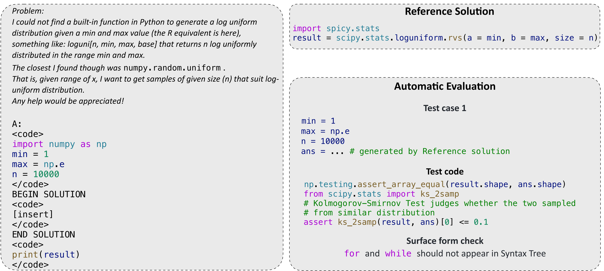
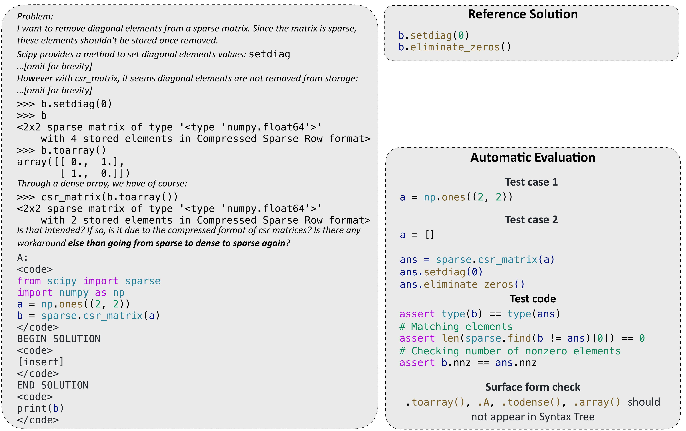

DS-1000 contains 1000 problems originating from 451 unique StackOverflow problems.
To defend against potential memoriza- tion, more than half of the DS-1000 problems
are modified from the original StackOverflow problems; they include 152 surface
perturbations, 235 semantic perturbations, and 162 difficult rewrites.

Below are more DS-1000 examples. For each example, The model needs to fill in the code
into “[insert]” in the prompt on the left; the code will then be executed to pass
the multi-criteria automatic evaluation, which includes the test cases and the
surface form constraints; a reference solution is provided at the bottom left.

NumPy example problem involving randomness, requiring the use of a specialist knowledge test.

An example problem of SciPy. Specific checking on conversion between dense matrix and sparse matrix.

An example problem of Pandas. We need to write reference solutions by ourselves
because high-vote replies from StackOverflow ignore the requirement "but does not exactly match it".

An example problem of TensorFlow. We implemented well-designed test function for tensor comparison.

An example problem of PyTorch, with failed attempt and error message given in description.

An example problem of Scikit-learn, requiring applying sklearn preprocessing method to Pandas dataframe.

An example problem of Matplotlib. Matplotlib original questions often contain example figures which cannot be
processed by current code models. We rewrite original questions into standalone questions in the form of comments.